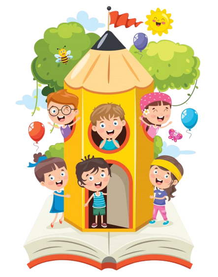

Aprenda se divertindo com quem você gosta
Os jogos educacionais desempenham um papel fundamental no processo de aprendizagem, proporcionando uma abordagem lúdica e envolvente para a educação. Eles oferecem uma série de benefícios significativos que contribuem para o desenvolvimento cognitivo, social e emocional de estudantes de todas as idades. Nesse contexto, o aplicativo Scratch se destaca como uma ferramenta excepcional.
O Scratch é uma plataforma de programação visual que permite aos alunos criar seus próprios jogos e animações de maneira interativa e criativa. Essa abordagem única combina o aprendizado de programação com a diversão de criar conteúdo digital.
O Scratch torna a programação acessível mesmo para estudantes mais jovens, permitindo que desenvolvam habilidades tecnológicas essenciais de uma forma envolvente e intuitiva.
Em primeiro lugar, os jogos educacionais, como os criados no Scratch, tornam o aprendizado mais atraente. Através de desafios, narrativas envolventes e interatividade, os alunos se tornam mais motivados e engajados em suas atividades educacionais. Isso ajuda a manter o interesse e o foco ao longo do tempo, tornando a aprendizagem mais eficaz.
Além disso, o Scratch promove o desenvolvimento de habilidades cognitivas, como resolução de problemas, pensamento crítico e criatividade. Ao criar seus próprios jogos e animações, os alunos enfrentam desafios que estimulam o raciocínio lógico e a tomada de decisões informadas.
O Scratch também oferece a capacidade de personalizar a aprendizagem, permitindo que os alunos explorem a programação de acordo com seu próprio ritmo e nível de habilidade. Isso é especialmente importante em salas de aula com estudantes de diferentes níveis de habilidade, onde o Scratch pode ser uma ferramenta valiosa para a diferenciação.
Além disso, ao criar projetos no Scratch, os alunos podem compartilhá-los com outros, promovendo a colaboração e a comunicação. Eles podem trabalhar em equipe para aprimorar suas criações e aprender uns com os outros, desenvolvendo habilidades sociais que são valiosas na vida cotidiana e no mercado de trabalho.
Em resumo, o Scratch desempenha um papel crucial na promoção de jogos educacionais que tornam a aprendizagem mais envolvente, desenvolvem habilidades cognitivas e sociais, e oferecem a flexibilidade necessária para atender às necessidades individuais dos alunos. Ele representa uma ferramenta poderosa que pode complementar e enriquecer o processo de ensino-aprendizagem, tornando-o mais eficaz e gratificante